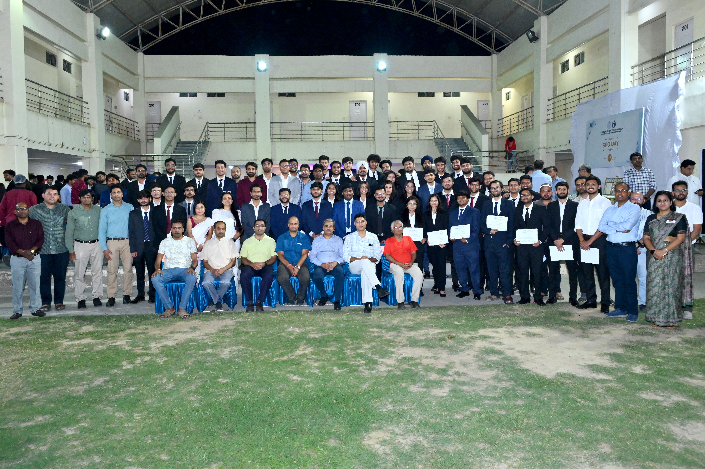

SPO Day Highlights


I was awarded the Exemplary Leadership Award by the Students’ Placement Office, IIT Kanpur in recognition of my leadership and impact as the PhD Overall Placement Coordinator (2024–25).
In this role, I spearheaded “Shodhspandan 2025”, IIT Kanpur’s dedicated PhD placement drive, successfully connecting doctoral candidates with leading recruiters across academia, research, and industry.
My responsibilities included leading a team of departmental placement coordinators, managing end-to-end logistics and strategy, cultivating long-term relationships with recruiters, and overseeing the entire placement lifecycle—from initial outreach to final offer negotiations.